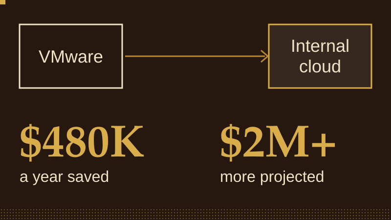

Moving apps off VMware
Moved apps off VMware to Verizon’s internal cloud, saving $480K a year.
- Internal work. No public link.

The problem
Applications were running on VMware. Keeping them there carried an ongoing operating cost. Verizon had an internal cloud platform that could run them, and moving them would cut that cost.
The move touched infrastructure, networking and the applications themselves, so it needed someone to plan it and keep those groups in step.
What I built
I led the move. That meant planning it, coordinating infrastructure, networking and application stakeholders, and working with a group of 15+ engineers and vendors across lab and production environments.
I wrote Python and Bash scripts that took the manual work out of configuration. They cut manual configuration time by 35%.
I also built a migration framework that the team adopted for the migrations that followed, and wrote runbooks so others could repeat the work.
- $480Ksaved every year in operating expense
- $2M+more savings projected
- 35%less manual configuration time
- 15+engineers and vendors worked with
How it works
Applications go from VMware to the internal cloud in five steps. The scripts and the framework sit in the middle.
Apps on VMware
Where the applications started out.
Plan and coordinate
Infrastructure, networking and application stakeholders, in lab and production.
- 35%
Script the setup
Python and Bash scripts cut manual configuration time.
Internal cloud
The applications run on Verizon’s internal cloud platform.
- $480K
Saved a year
Operating expense that no longer has to be paid.
Results
The move saves $480K a year. The migration framework is projected to bring $2M+ in further reductions as the team keeps migrating.
- $480Ksaved a year
- $2M+more savings projected
- 35%less manual configuration time
- 15+engineers and vendors worked with
What I owned
- Led the move of applications from VMware to Verizon’s internal cloud.
- Planned the work and coordinated infrastructure, networking and application stakeholders.
- Wrote Python and Bash scripts that cut manual configuration time by 35%.
- Built the migration framework the team adopted, and wrote runbooks for the next person.
What I learned
- A migration is mostly coordination. The scripts saved time, but getting three groups to move together is what kept it on track.
- Build the framework, not just the move. One migration saved $480K a year. A framework others can reuse is where the larger projection comes from.